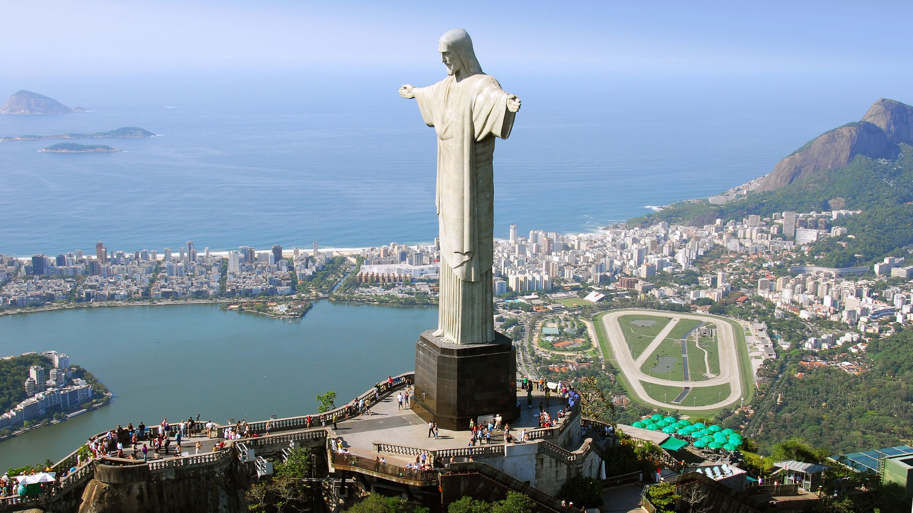

Our trips

Japan seamlessly blends tradition with innovation, offering a unique cultural experience. From ancient temples to high-tech cities, it's a captivating mix. The cuisine is unparalleled, showcasing precision and flavor.

The United States harmoniously weaves tradition and innovation, crafting an unparalleled cultural mosaic for travelers to explore. Ancient landmarks stand alongside cutting-edge cities, creating an enthralling contrast. Its cuisine, diverse and flavorful, represents a melting pot of culinary influences.

Brazil seamlessly blends tradition and innovation, offering a captivating cultural experience. Ancient landmarks and modern cities coexist harmoniously, creating a vibrant tapestry of diversity. Its cuisine, a flavorful fusion of influences, reflects the rich cultural heritage.

Argentina seamlessly merges tradition with innovation, offering a captivating cultural odyssey. Ancient heritage sites stand alongside modern metropolises, showcasing a diverse and dynamic landscape. Its cuisine, a flavorful fusion of influences, embodies the nation's rich history.

Paris effortlessly blends heritage with innovation, offering a mesmerizing cultural journey. Historic landmarks intertwine with cutting-edge architecture, creating an enchanting cityscape. Its cuisine, a pinnacle of gastronomy, reflects a rich culinary legacy.

Poland seamlessly weaves tradition and innovation, offering a captivating cultural panorama. Centuries-old architecture coexists with modern developments, showcasing a diverse and evolving landscape. Its cuisine, a delightful fusion of flavors, mirrors a rich historical heritage.
Germany seamlessly merges tradition with innovation, offering a multifaceted cultural adventure. Historic landmarks blend harmoniously with cutting-edge modernity, painting a diverse and dynamic landscape. Its cuisine, a flavorful tapestry of regional specialties, embodies a rich culinary heritage
Morocco seamlessly blends rich tradition with innovation, offering a captivating cultural tapestry. Ancient medinas coexist with modern developments, creating a diverse and enchanting landscape. Its cuisine, an exquisite blend of flavors and spices, reflects a deeply rooted cultural heritage

Italy seamlessly intertwines tradition with innovation, offering an enchanting cultural escapade. Ancient ruins blend harmoniously with modern architecture, creating a rich and diverse tapestry. Its cuisine, a symphony of flavors and textures, epitomizes a deep-rooted culinary legacy